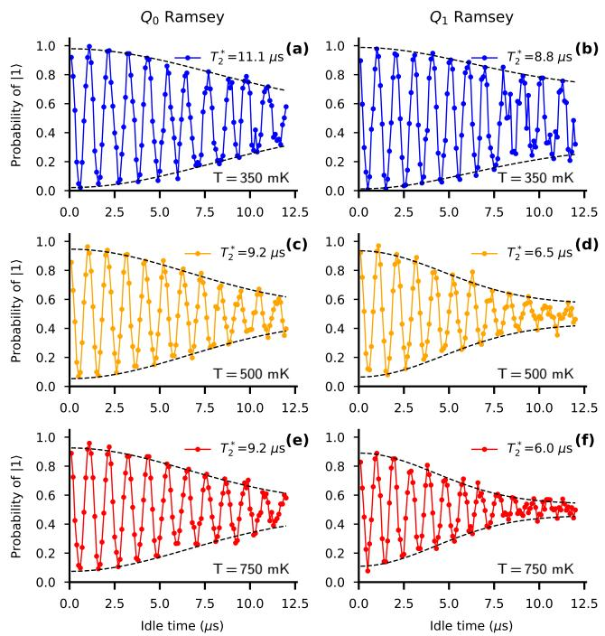
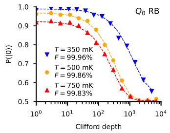
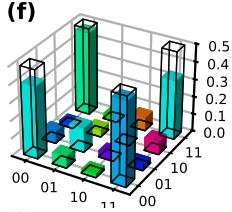

为什么要把比特”加热”
低温电子学的扩展路线要求把控制电路与比特同封装或至少同温区：cryo-CMOS 放在 4 K 冷板可以带走大量制冷功率，但距比特仍隔着衰减链；更激进的 System-on-Chip 方案把电子学直接贴到比特封装里，芯片功耗（即便低至 µW/bit 量级）也把局部温度推离混合腔标称值。于是出现一个温度预算问题：比特能容忍多热？
物理上的余量来自谷劈裂：该工作用的异质结构专为高谷劈裂调优（Si 富集钝化层），谷劈裂 ，对应 比它小的温度可达 ——热激发不至显著占据激发谷。同理，塞曼能（few µeV 量级、外场仅 29 mT 加微磁体梯度）远小于 （750 mK 约 65 µeV），意味着热平衡布居偏差本来就不是靠极化”冻”出来的，而是靠读出与初始化选择性泵浦维持——这是升温运行的正确心理图像：温度不是靠冻住错误，而是靠门与读出把错误持续排掉。
器件与门集
器件：非掺杂 ，7 nm 应变硅量子阱 + 30 nm Si₀.₇Ge₀.₃ 间隔层，三层 Ti:Pd 栅（Al₂O₃ 介质），顶部 Ti:Co 铁磁层提供微波磁体梯度（EDSR 驱动与寻址）；六量子点阵列、两侧 RF-SET 传感（高阻超导电感匹配）。两比特 / 频率 5.047/4.991 GHz 固定不变，X90 门 140 ns、CZ 门（势垒脉冲 + 单比特相位旋转编译）200 ns 在三个温度共用同一套参数——刻意不逐温度优化，以给出”保守可重复”的保真度下界。两比特读出用宇称读出 + 状态过滤（PSB + SF1–SF3）：先丢弃反平行自旋态，再用 CROT 把同宇称态区分开。
温度扫描：什么先坏
三个温度下系统测量的完整指标（Table I 摘要）：
| 量 | 350 mK | 500 mK | 750 mK |
|---|---|---|---|
| ≳134 ms | ≳73 ms | 41 ms | |
| （/） | 11.1/8.8 µs | 9.2/6.5 µs | 9.2/5.9 µs |
| 43.3/43.6 µs | 36.4/38.3 µs | 31.9/32.0 µs | |
| 单比特 Clifford RB | 99.96%/99.84% | 99.86%/99.79% | 99.83%/99.74% |
| CZ（ICRB） | 99.30% | 99.51% | 98.41% |
| Bell 保真度（SPAM 修正后） | 0.9794 | 0.9675 | 0.8192 |
| Bell 并发度（SPAM 修正后） | 0.9442 | 0.8229 | 0.4869 |
规律清晰：
- 弛豫几乎无害： 随温度缩短（与声子占据一致的预期行为）但 750 mK 仍有 41 ms，比微秒级实验时标长四个量级；
- 退相干温和恶化： 从 350 到 750 mK， 降约 17%、 降约 32%——与温度升高后电荷噪声经自旋轨道耦合增强的图像一致（见自旋退相干词条），且离微磁体越近的比特（）梯度越大但此处反而更稳，说明显著贡献来自共同的模式而非单纯驱动梯度；
- 门保真度到 500 mK 几乎无损：单比特保持 99.8% 以上，CZ 甚至因再校准不确定性在 500 mK 略高（99.51% vs 99.30%）；750 mK 时 CZ 掉到 98.41%，成为第一个明显受损的指标；
- SPAM 是最脆弱的一环：高温下 SET 传感灵敏度下降使布居分辨变差，原始 Bell 保真度在 750 mK 仅 0.7576，SPAM 修正后回升到 0.8192——修正矩阵本身就是温度的函数，需要逐温区重新标定。

Ramsey 条纹提取的 随温度的变化：350 mK（蓝）、500 mK（橙）、750 mK（红）三档温度下两比特的自由演化退相干——升温后条纹对比度与衰减时间温和下降（ 约 −17%、 约 −32%），与电荷噪声经自旋轨道耦合增强的机制一致。图源：Amitonov et al. (2024)，Fig. 2。
单比特保真度用标准 Clifford 随机基准提取：对每个深度 采样 15 条随机 Clifford 序列、每条 次，回零概率拟合
其中 是每 Clifford 的存活率、 与 吸收 SPAM 偏移。CZ 用 Character RB（ICRB）——标准两比特交织 RB 在该原生门集下电路太深（平均 3.9 个非虚拟单比特门 + 1.48 个 CZ 每 Clifford），衰减过快；ICRB 选 为基准组、两比特 Pauli 组为特征组，把噪声累积压回可控范围。

三温度 Clifford 随机基准：两比特的回零概率随 Clifford 深度的指数衰减（350 mK 蓝、500 mK 橙、750 mK 红），拟合给出的单比特保真度标注在图中——750 mK 下仍保持 99.7% 以上。图源：Amitonov et al. (2024)，Fig. 3。
Bell 态层析：纠缠在高温下存活
对 做完整两比特层析，同时测量 SPAM 矩阵用于修正。结果（图 5）：350 与 500 mK 的修正后密度矩阵与理想 Bell 态（黑线框）肉眼几无差别；750 mK 出现可见退化但保真度仍 0.82。作者把当前工艺的最优工作温度定在 500 mK 附近——比 750 mK 稳得多，又已远离混合腔的毫开尔文区；继续向更高温度推进的路径是 300 mm 产线级工艺压低电荷噪声，以及对抗 SET 灵敏度下降的读出改进。

Bell 态 的层析密度矩阵（三个温度，纵向为实部分量、颜色为相位，黑线框为理想值）及对应的 SPAM 修正：350 与 500 mK 修正后几近理想，750 mK 保真度 0.82——纠缠态在集成电子学热预算温度下依然存活。图源：Amitonov et al. (2024)，Fig. 5。
与其他概念的关系
- 低温电子学：本词条是”比特侧”对热预算问题的回答——电子学侧的 cryo-CMOS、单片集成与布线密度都以比特可用的运行温度为设计输入。
- 自旋退相干： 的温度依赖（17%/32% 下降）把电荷噪声–自旋轨道耦合通道在升温下加重的事实定量化； 的声子机制则在毫秒量级上仍然宽松。
- Si/SiGe 异质结：高温运行的物理余量由外延设计给足——高谷劈裂（≳0.1 meV → T≳1 K）与 Si 富集钝化界面是前提。
- 单比特门与两比特门：升温下第一个明显退化的是 CZ（98.41% @750 mK），提示绝热交换脉冲对噪声窗口最敏感。
- 单电子晶体管：SPAM 是高温下最脆弱环节，SET 灵敏度随温度下降直接决定可用读出窗——读出而非门操作是升温路线的下一瓶颈。
参考文献
- Amitonov, S., Aprà, A., Asker, M., Bals, R., Barry, B., Bashir, I., Blokhina, E., Giounanlis, P., Harkin, M., Hanos-Puskai, P., Kriekouki, I., Leipold, D., Moras, M., Murphy, N., Petropoulos, N., Power, C., Sammak, A., Samkharadze, N., Semenov, A., Sokolov, A., Redmond, D., Rohrbacher, C., Wu, X. Persistence of Entangled States and High Fidelity Quantum Gate Operations in Si/SiGe Spin Qubits at High Temperature (2024). arXiv:2412.01920（QAtlas 缓存：2412.01920）。
完整文献库（含各篇站内全文页）见 参考文献库。